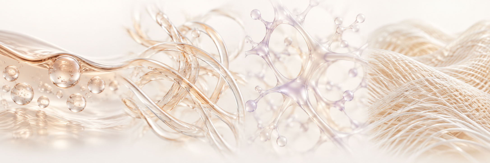
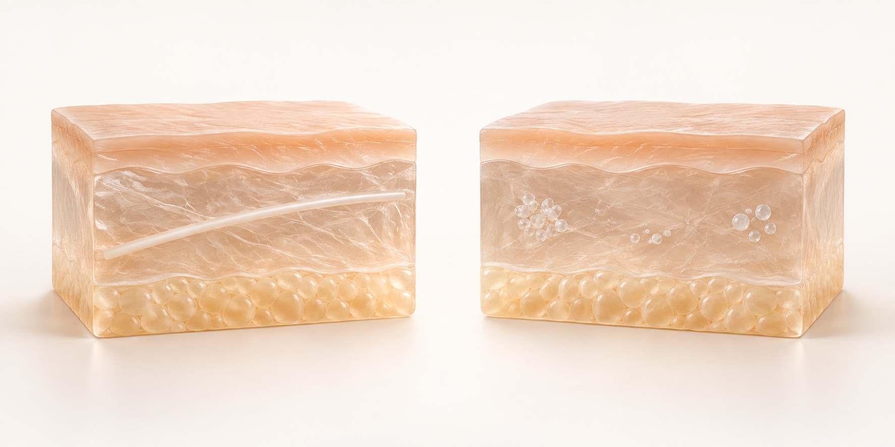

超细颗粒液态剂型
品牌描述其具有液态般的触感。准确的粒径分布与浓度应查阅最新规格书。
成分与剂型

品牌描述其具有液态般的触感。准确的粒径分布与浓度应查阅最新规格书。
已有研究观察了 PCL 剂型相关的胶原形成。其他剂型的研究不能代替 Aestyve 产品自身的数据。
弹性、肤质与光泽是肌肤品质的主要评估维度。产品效果与持续时间须以该产品的临床资料为依据。
由具备资质的医务人员结合获批用途、使用说明书与个人皮肤状态评估适用性。
Product Dossier


规格由品牌提供。请以当前供货标签及规格书为准。
质量与文件

| 项目 | PCL 提拉线 | Aestyve Liquid PCL |
|---|---|---|
| 形态 | 固体线材，结构因产品而异 | 品牌描述的超细颗粒液态剂型 |
| 作用路径 | 依据线材设计与置入方式提供组织支撑 | 液态 PCL 剂型 |
| 组织反应 | 随材料、结构、位置及评估时间而变化 | 需结合剂型、浓度、分布及产品专属证据判断 |
| 使用依据 | 具体线材产品的批准范围与使用说明书 | 实际供货产品的批准范围与使用说明书 |
根据产品特性及适用规格，核对原料与成品的质量资料。
原料身份、成分与含量、pH 及产品专属物性规格
适用产品的无菌或微生物、内毒素及残留物检测项目
批号、有效期、装量、包装密封完整性及储存条件
PCL 产品核对组成、浓度、粒径分布及剂型均匀性等产品规格。
检测结果与认证适用于特定产品、型号、生产场所或批次。各文件载明签发机构、日期及适用范围；原料检测与成品检测属于不同类别。
适用检测项目与资料提供范围因产品而异。
03 / LITERATURE
以下四篇文献涉及 PCL 材料、其他剂型与线材，并非 Aestyve 液态 PCL 自身的临床结果。
Clin Cosmet Investig Dermatol. 13:31–48.
综述 PCL 的生物降解特性及其作为美容领域胶原刺激材料的应用。
查看论文 ↗J Cosmet Laser Ther. 17(2):99–101.
一项涉及两名受试者的初步研究，在注射另一种 PCL 填充剂后 13 个月分析组织，观察到颗粒周围的胶原形成。
查看论文 ↗Dermatol Ther. 34(2):e14770.
在大鼠模型中评估无颗粒 PCL 剂型的安全性、降解与新生胶原，其技术路径不同于本产品所描述的超细颗粒剂型。
查看论文 ↗J Cosmet Dermatol. 20(9):2743–2749.
在小鼠模型中比较 PCL 等不同线材。线材周围组织变化的结果，不能转化为液态产品的功效数值。
查看论文 ↗应区分材料文献与产品自身的检测及临床资料。以供货产品的获批用途与最新使用说明书为准，改善程度及持续时间可能因个体和治疗条件而异。
请提供目标国家、公司或诊所名称、所需数量与引进时间。供货可行性、报价及样品条件需逐项确认。
请先申请最新规格书、标签及使用说明书，再根据市场要求确认注册与批次检测资料是否可提供，并核对其是否适用于实际供货产品及批次。
需审核目标市场的注册、进口要求及经销资质。本页的公开展示不代表已取得特定国家的销售许可。
AESTYVE / LIQUID PCL